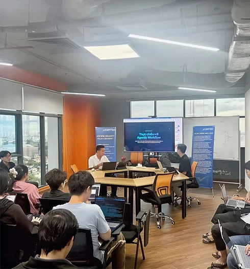

Why choose us
Our priority, our commitment, our solutions
Choose XionTechs for integrated solutions, industry experience, and metric-driven delivery. We bring product ideas to life through collaborative creation and a "Get IT Done" attitude.
Client centricity focus
XionTechs emphasizes a client-first approach, focusing on providing exceptional experiences and valuable outcomes.
Integrity and ethical standards
With an integrity mindset, XionTechs operates with honesty and transparency, maintaining the highest ethical standards in all work.
High quality delivery
XionTechs is responsible for providing high-quality solutions that are reliable and efficient, exceeding industry standards.
Why choose us
Our priority, our commitment, our solutions
Choose XionTechs for integrated solutions, industry experience, and metric-driven delivery. We bring product ideas to life through collaborative creation and a "Get IT Done" attitude.
Client centricity focus
XionTechs emphasizes a client-first approach, focusing on providing exceptional experiences and valuable outcomes.
Integrity and ethical standards
With an integrity mindset, XionTechs operates with honesty and transparency, maintaining the highest ethical standards in all work.
High quality delivery
XionTechs is responsible for providing high-quality solutions that are reliable and efficient, exceeding industry standards.
… end of the 4-D process: Agile practices and an AI-driven workflow, with metric-driven project management.
Who we are
We deliver consumer-centric tech solutions
XionTechs specializes in delivering consumer-centric technology solutions that empower businesses to thrive in today's digital landscape. …

